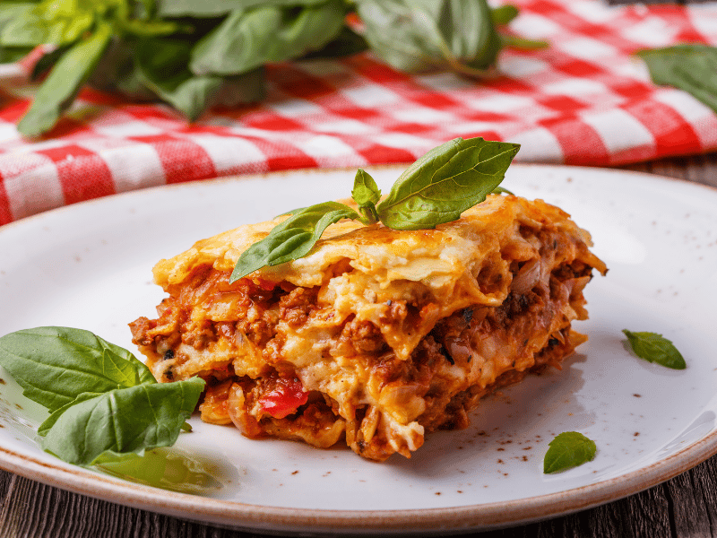

Return Home
Prep Time: 30 minutes
Cook Time: 1 hour
Servings: 6
Ingredients
- 12 lasagna noodles
- 1 pound ground beef
- 1/2 pound Italian sausage
- 1 small onion, finely chopped
- 3 cloves garlic, minced
- 24 oz marinara sauce
- 15 oz ricotta cheese
- 1 large egg
- 1/4 cup freshly chopped parsley
- 2 cups shredded mozzarella cheese
- 1/2 cup grated Parmesan cheese
- Salt and pepper to taste
Instructions
-
Preheat the oven to 375°F (190°C).
-
Cook the meat: In a large skillet over medium heat, cook ground beef, sausage, onion, and garlic until browned. Drain excess fat.
-
Add the sauce: Stir in marinara sauce, season with salt and pepper, and simmer for 10 minutes.
-
Mix the ricotta filling: In a medium bowl, combine ricotta cheese, egg, parsley, and a pinch of salt.
-
Boil the noodles: Cook lasagna noodles according to package instructions, then lay flat on a towel.
-
Assemble the lasagna:
- Spread a thin layer of meat sauce on the bottom of a 9x13 inch baking dish.
- Layer 4 lasagna noodles, then spread 1/3 of the ricotta mixture, sprinkle with mozzarella and Parmesan, and top with meat sauce.
- Repeat layers two more times, finishing with sauce and cheese on top.
-
Bake: Cover with foil and bake for 25 minutes. Remove foil and bake an additional 20-25 minutes until cheese is bubbly and golden.
-
Rest and serve: Let the lasagna rest for 10-15 minutes before slicing. Garnish with fresh parsley and serve.

Tips for Perfect Lasagna
- Letting it rest helps the layers set for cleaner slices.
- Add a sprinkle of extra Parmesan on top for extra crispiness.
- Substitute beef with turkey for a lighter option.